Manage Catch and Effort of Fleets
Source:vignettes/articles/fleet-management.Rmd
fleet-management.Rmdmarlin allows for a wide range of options to govern both
the management and internal dynamics of fishing fleets.
Things you can adjust include:
-
Fleet models:
fleet_modelcontrols effort dynamics. Options are:-
"constant_effort": total effort fixed atbase_efforteach time step -
"open_access": effort adjusts based on average profitability, equilibrating where total profits = 0 -
"sole_owner": effort adjusts based on marginal profitability, equilibrating at maximum economic yield (MEY) where marginal profit = 0 -
"manual": effort taken from a user-supplied vector
-
Closed fishing seasons per species (e.g. enforcing a closed season for species X but not species Y)
Catch quotas per species
Effort caps per fleet
Size limits and selectivity forms per metier and species
No-take marine protected areas (MPAs)
You can mix and match most of these options — for example, running an open-access fleet subject to a total quota for some species but not others.
First, let’s set up the system and the species. In this case we use a simple example with one bigeye tuna population.
library(marlin)
library(tidyverse)
theme_set(theme_marlin(base_size = 14) + theme(legend.position = "top"))
resolution <- 10 # resolution is in squared patches, so 10 implies a 10x10 system, i.e. 100 patches
years <- 50
seasons <- 4
time_step <- 1 / seasons
steps <- years * seasons
fauna <-
list(
"bigeye" = create_critter(
scientific_name = "Thunnus obesus",
adult_diffusion = 10,
density_dependence = "post_dispersal",
seasons = seasons,
depletion = 0.8,
resolution = resolution,
steepness = 0.6,
ssb0 = 1000
)
)
fauna$bigeye$m_at_age
#> [1] 3.6234693 2.4692787 1.8927609 1.5473114 1.3173955 1.1534981 1.0308614
#> [8] 0.9357311 0.8598546 0.7979800 0.7466060 0.7033087 0.6663565 0.6344796
#> [15] 0.6067255 0.5823660 0.5608345 0.5416836 0.5245555 0.5091604 0.4952612
#> [22] 0.4826621 0.4711996 0.4607368 0.4511574 0.4423625 0.4342675 0.4267990
#> [29] 0.4198938 0.4134967 0.4075592 0.4020388 0.3968982 0.3921040 0.3876268
#> [36] 0.3834400 0.3795203 0.3758463 0.3723991 0.3691613 0.3661175 0.3632535
#> [43] 0.3605564 0.3580146 0.3556173 0.3533547 0.3512180 0.3491988 0.3472895Open access
Let’s set up two fleets: one open access, one constant effort. Open-access dynamics are based on the profitability of the fishery and require a few more parameters, though reasonable defaults are provided.
Open-access effort dynamics
Total effort adjusts each time step in response to a normalised profitability signal:
where the profitability signal is:
and and are total revenue and total cost in the previous step, respectively. This signal is bounded in , handles negative revenue safely, and is invariant to rescaling.
The parameters control entry/exit dynamics:
-
(
oa_rho_year): annual effort adjustment rate. A value of 0.5 means effort can grow or shrink by roughly 50% per year under strong profit or loss signals. -
(
oa_signal_half): signal value at which the tanh response reaches half its maximum. Lower values make fleets more responsive. Typical range 0.15–0.4; default 0.3. -
oa_max_growth_per_year: maximum fractional increase in effort per year under highly profitable conditions (e.g. 0.5 = +50% per year). -
oa_max_decline_per_year: maximum fractional decrease in effort per year under highly unprofitable conditions (e.g. 0.5 = -50% per year).
The tanh function ensures that:
- Entry/exit speed saturates under extreme profits or losses (avoiding unrealistic boom/bust cycles).
- Response is approximately linear near break-even profitability.
- Effort converges to an equilibrium where total profits equal zero (the classic open-access outcome).
Revenue and costs
Revenue is:
where is price and Catch is catch for species by fleet .
Costs are:
where:
-
(
cost_per_unit_effort): base cost per unit of effort -
:
reference effort per patch (typically
base_effort / n_patches) -
(
effort_cost_exponent): exponent controlling congestion/convexity. Values > 1 make additional units of effort progressively more expensive. Default 1.2. -
(
travel_weight): derived internally fromtravel_fraction - : normalised distance from patch to the nearest port
Calibrating costs with cr_ratio
Rather than setting
manually, specify a target cost-to-revenue ratio (cr_ratio)
at equilibrium. A value of 1 means zero profits at equilibrium (classic
open access), > 1 means losses, < 1 means positive profits.
tune_fleets(..., tune_costs = TRUE) then solves for the
that achieves the desired cr_ratio at the tuned depletion
level.
fleets <- list(
"longline" = create_fleet(
list("bigeye" = Metier$new(
critter = fauna$bigeye,
price = 10,
sel_form = "logistic",
sel_start = 1,
sel_delta = .01,
catchability = 0,
p_explt = 2
)
),
base_effort = resolution ^ 2,
resolution = resolution,
cr_ratio = 1,
travel_fraction = 0.5,
fleet_model = "open_access",
oa_max_growth_per_year = 0.5,
oa_max_decline_per_year = 0.5,
oa_signal_half = 0.3)
,
"handline" = create_fleet(
list("bigeye" = Metier$new(
critter = fauna$bigeye,
price = 10,
sel_form = "logistic",
sel_start = 1,
sel_delta = .01,
catchability = 0,
p_explt = 1
)
),
base_effort = resolution ^ 2,
resolution = resolution,
fleet_model = "constant_effort",
cost_per_unit_effort = 2
))
fleets <- tune_fleets(fauna, fleets, tune_type = "depletion", tune_costs = TRUE) We can now run our simulation and examine the resulting fleet dynamics
sim <- simmar(fauna = fauna,
fleets = fleets,
years = years)
proc_sim <- process_marlin(sim)
plot_marlin(proc_sim)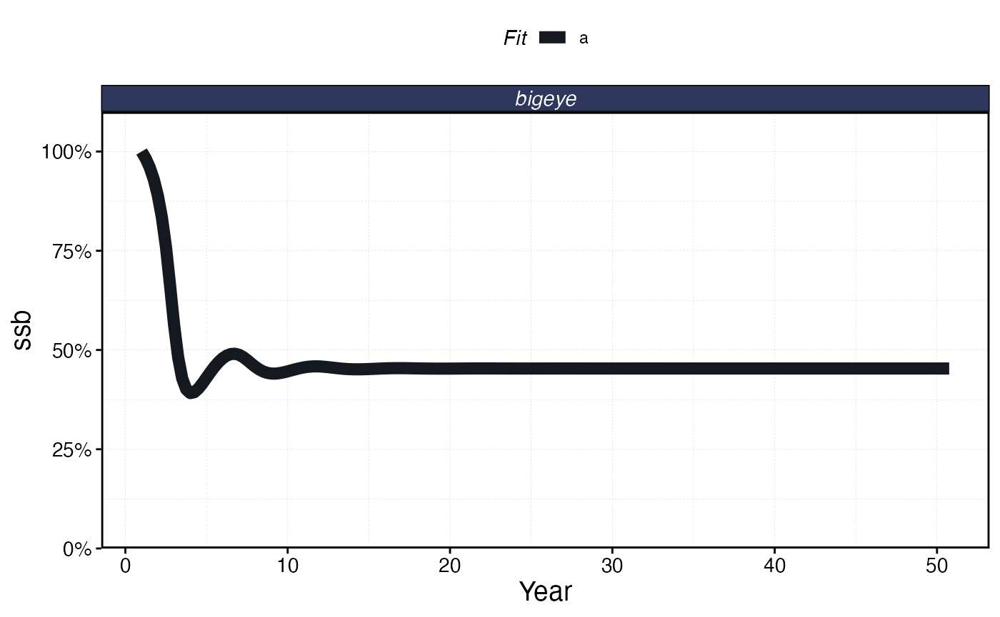
proc_sim$fleets %>%
group_by(step, fleet) %>%
summarise(effort = sum(effort)) %>%
ggplot(aes(step * time_step, effort, color = fleet)) +
geom_line() +
scale_x_continuous(name = "Year")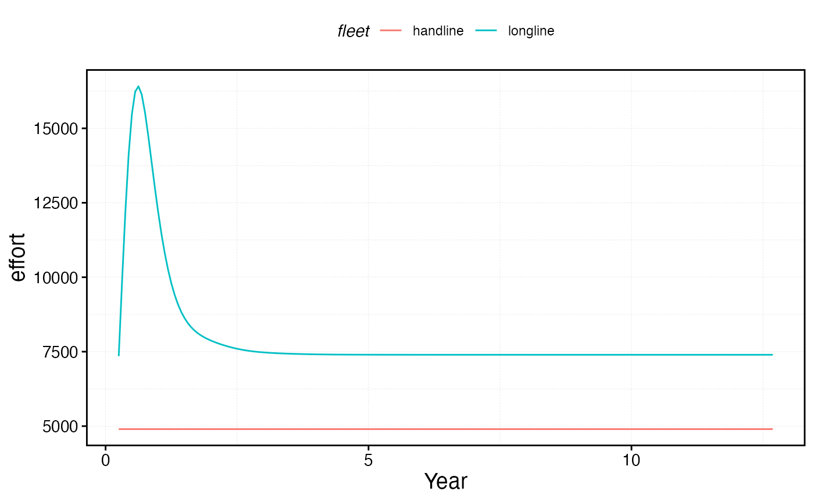
Open access and MPAs
The fleet model choice determines how effort responds to an MPA. Under the default constant effort with reallocation dynamics, total effort stays fixed but is redistributed from inside the MPA to the remaining fishable patches. Under the open access model, effort responds dynamically to how the MPA affects profitability.
When an MPA is implemented, the open-access fleet initially loses access to productive fishing grounds inside the closure. This reduces catch while costs remain the same, driving down profits and triggering effort contraction. As the MPA matures, spillover effects (adult movement and larval export from the protected area) can increase catch rates in adjacent patches, improving profitability and allowing effort to partially recover. Eventually the fleet settles at a new zero-profit equilibrium where the benefits of spillover are balanced against the lost access inside the MPA.
set.seed(42)
#specify some MPA locations
mpa_locations <- expand_grid(x = 1:resolution, y = 1:resolution) %>%
mutate(mpa = x > 4 & y < 6)
with_mpa <- simmar(fauna = fauna,
fleets = fleets,
years = years,
manager = list(mpas = list(locations = mpa_locations,
mpa_year = floor(years * .5))))
proc_mpa_sim <- process_marlin(with_mpa)
proc_mpa_sim$fleets %>%
group_by(step, fleet) %>%
summarise(effort = sum(effort)) %>%
ggplot(aes(step * time_step, effort, color = fleet)) +
geom_line() +
scale_x_continuous(name = "year")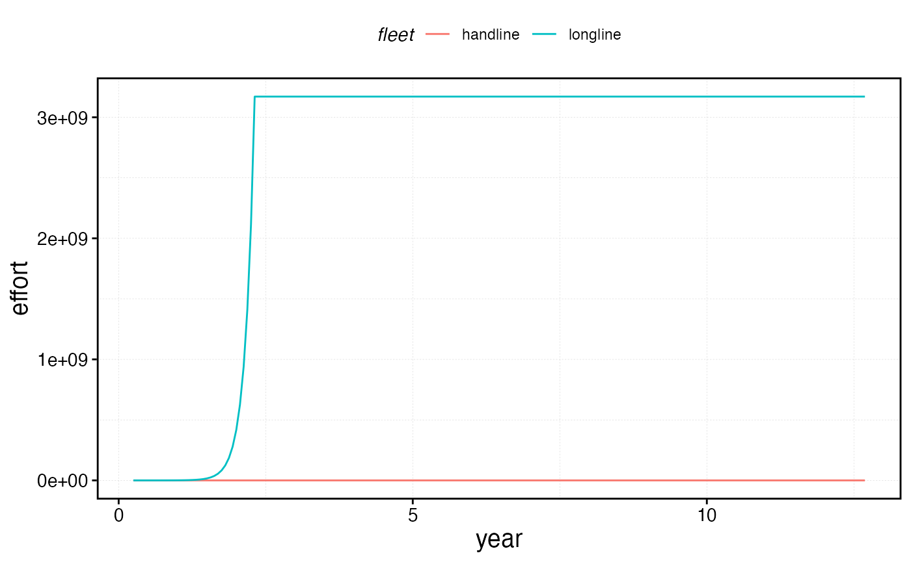
Sole owner
The "sole_owner" fleet model is identical to open access
in its effort adjustment mechanics, but uses the marginal
profit signal rather than the average profit signal. This
causes the fleet to equilibrate at maximum economic yield (MEY), where
marginal profit equals zero, rather than at the open-access equilibrium
where total profit equals zero.
Marginal profit is computed via finite-difference perturbations (see
?calc_marginal_value). This requires additional computation
each step, so "sole_owner" fleets run slightly slower than
"open_access" fleets. The equilibrium outcome typically
features lower effort and higher biomass than open access, since the
fleet stops expanding when the next unit of effort would no
longer be profitable, rather than waiting until all effort is
unprofitable.
To use sole owner dynamics:
fleets <- list(
"longline" = create_fleet(
list("bigeye" = Metier$new(...)),
fleet_model = "sole_owner",
cr_ratio = 0.8, # MEY typically has positive profits, so cr_ratio < 1
...
)
)Quotas
Quotas can be layered onto any fleet model. Here we impose a total catch quota of 8 units of bigeye across all fleets. The quota is enforced each time step by solving for a scalar effort multiplier that keeps total catch at or below the quota.
Important: quotas impose a cap, not a requirement. In the early days of the fishery when catches would naturally exceed the quota, the quota is binding and effort is reduced proportionally. However, in later years when the population has declined and effort dynamics (especially under open access) would produce catches below the quota anyway, the fleet is unconstrained and the quota has no effect. This reflects real-world quota fisheries where economic or biological conditions can make quotas non-binding.
sim_quota <- simmar(fauna = fauna,
fleets = fleets,
years = years,
manager = list(quotas = list(bigeye = 8)))
proc_sim_quota <- process_marlin(sim_quota)
plot_marlin(proc_sim_quota, plot_var = "c", max_scale = FALSE)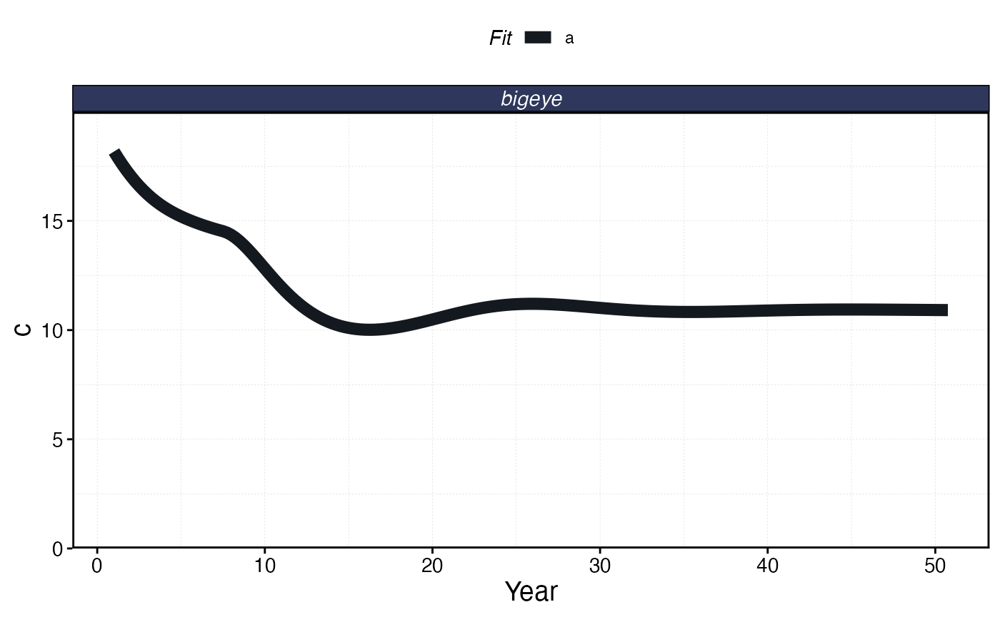
proc_sim_quota$fleets %>%
group_by(step, fleet) %>%
summarise(catch = sum(catch)) %>%
ggplot(aes(step * time_step, catch, color = fleet)) +
geom_line()+
scale_x_continuous(name = "Year")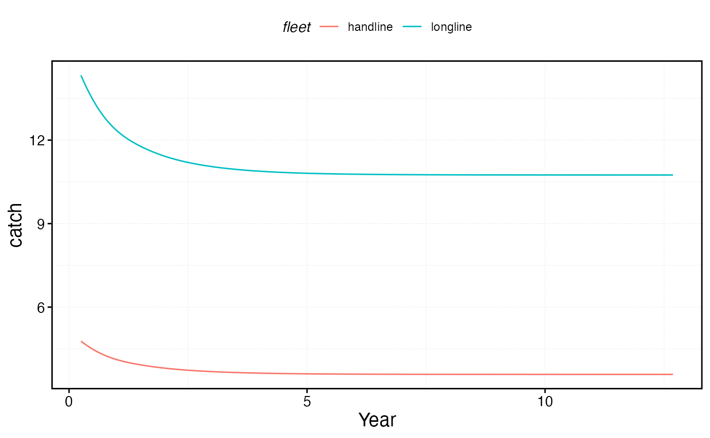
proc_sim_quota$fleets %>%
group_by(step, fleet) %>%
summarise(effort = sum(effort)) %>%
ggplot(aes(step * time_step, effort, color = fleet)) +
geom_line() +
scale_x_continuous(name = "Year")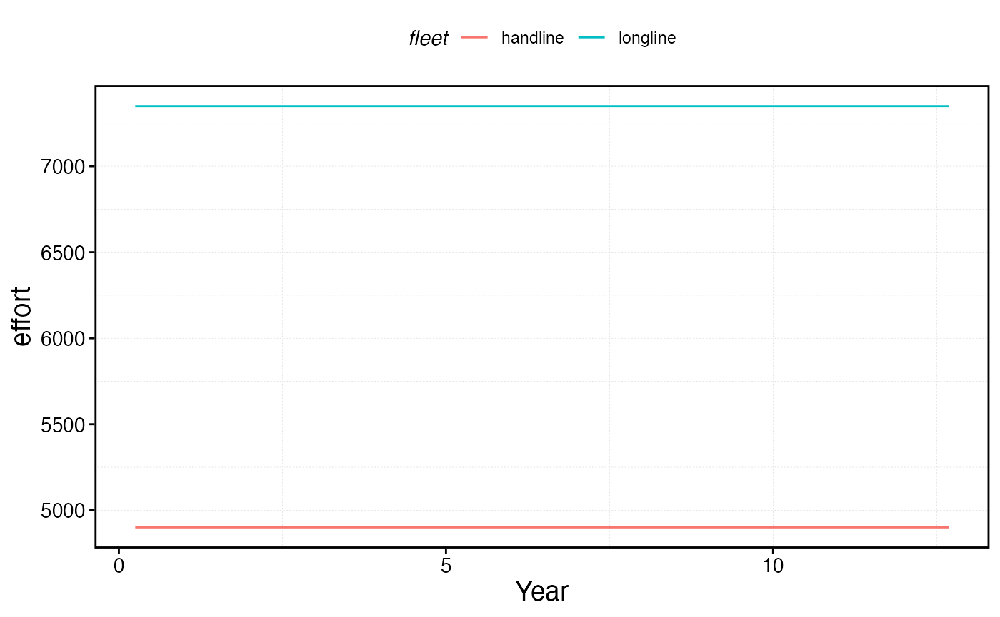
Effort caps
Another management option is to set a maximum total effort per fleet. This could reflect regulation (e.g. limited entry permits) or physical reality (e.g. if effort is measured in “days fished per year” by a fixed number of vessels, there is a natural ceiling).
Set effort caps via
manager = list(effort_cap = list(FLEET_NAME = EFFORT_CAP)),
where FLEET_NAME is the name of the fleet and
EFFORT_CAP is the maximum total effort allowed.
Note: effort caps are only meaningful when
fleet_model == "open_access" or "sole_owner".
For constant-effort fleets, effort is already fixed at
base_effort. Under open-access or sole-owner dynamics, the
cap ensures that while profitability signals can reduce total
effort, effort can never expand beyond the cap. The fleet can still
contract below the cap if losses warrant it, but profitable conditions
will not drive effort above the ceiling.
cap = 1.1*fleets$longline$base_effort
sim_effort <- simmar(fauna = fauna,
fleets = fleets,
years = years,
manager = list(effort_cap = list(longline = cap)))
proc_sim_effort <- process_marlin(sim_effort)
plot_marlin(proc_sim_effort, plot_var = "c", max_scale = FALSE)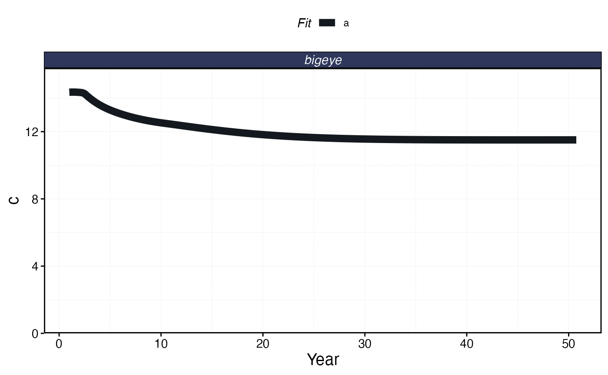
proc_sim_effort$fleets %>%
group_by(step, fleet) %>%
summarise(catch = sum(catch)) %>%
ggplot(aes(step * time_step, catch, color = fleet)) +
geom_line()+
scale_x_continuous(name = "Year")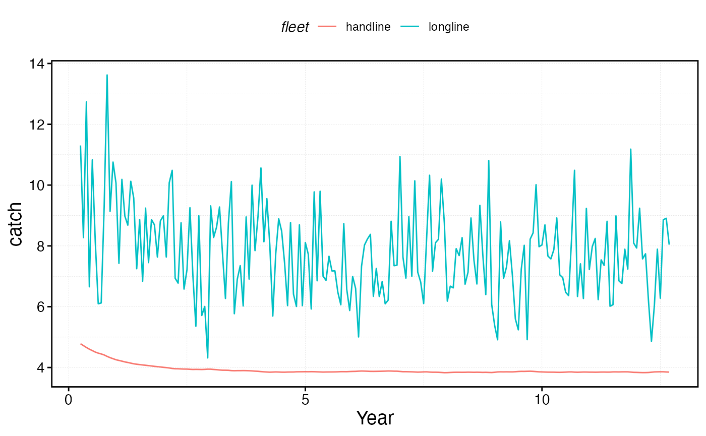
proc_sim_effort$fleets %>%
group_by(step, fleet, patch) %>%
summarise(effort = unique(effort)) %>%
group_by(step, fleet) |>
summarise(effort = sum(effort)) |>
ggplot(aes(step * time_step, effort, color = fleet)) +
geom_line() +
geom_hline(yintercept = cap) +
scale_x_continuous(name = "Year") +
scale_y_continuous(limits = c(0, NA))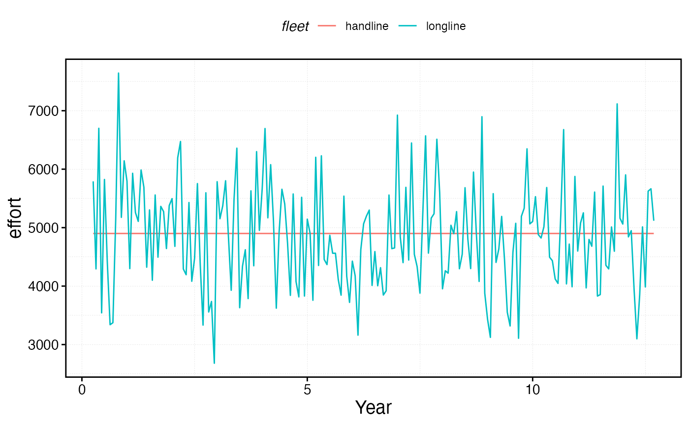
Manual effort
As an alternative to model-driven effort dynamics, you can manually
specify total effort for each time step. Set
fleet_model = "manual" and provide a vector of effort
values in the fleet object’s effort field. The vector must
have length equal to years * seasons.
This is useful when you want to impose an exogenous effort trajectory — for example, to simulate the historical expansion of a fishery, test the effects of a known effort time series, or explore counterfactual scenarios where effort follows a prescribed pattern rather than responding endogenously to economic signals.
time_steps <- years * seasons
fleets$longline$fleet_model <- "manual"
fleets$longline$effort <- fleets$longline$base_effort * rlnorm(time_steps,0,.2)
fleets <- tune_fleets(fauna, fleets, tune_type = "depletion")
sim_effort <- simmar(
fauna = fauna,
fleets = fleets,
years = years
)
proc_sim_effort <- process_marlin(sim_effort)
plot_marlin(proc_sim_effort, plot_var = "c", max_scale = FALSE)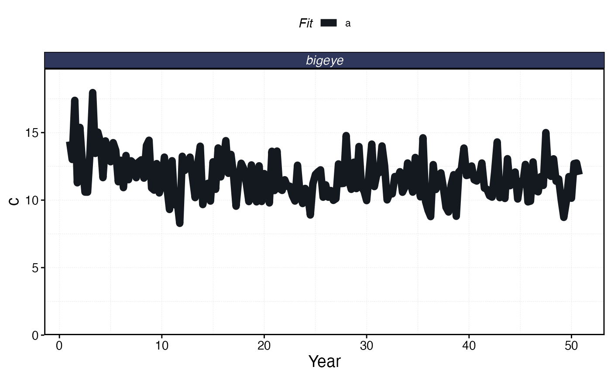
proc_sim_effort$fleets %>%
group_by(step, fleet) %>%
summarise(catch = sum(catch)) %>%
ggplot(aes(step * time_step, catch, color = fleet)) +
geom_line() +
scale_x_continuous(name = "Year")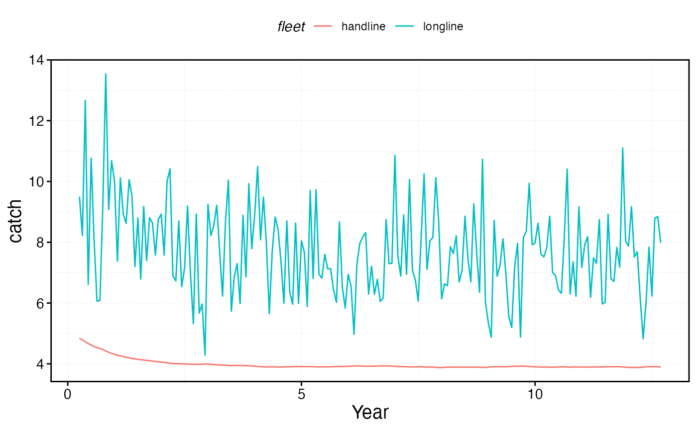
proc_sim_effort$fleets %>%
group_by(step, fleet) %>%
summarise(effort = sum(effort)) %>%
ggplot(aes(step * time_step, effort, color = fleet)) +
geom_line() +
scale_x_continuous(name = "Year")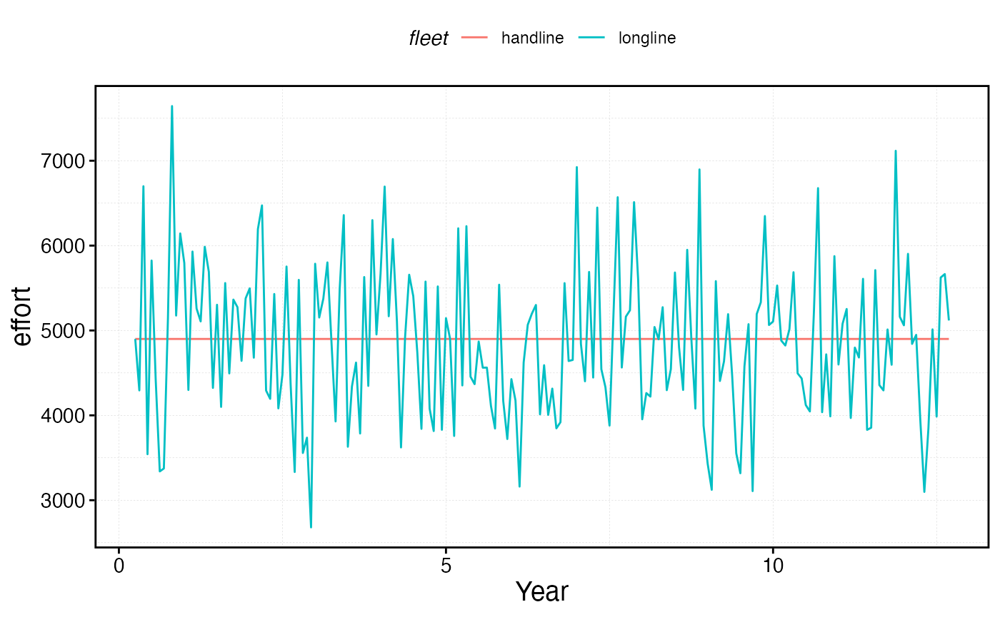